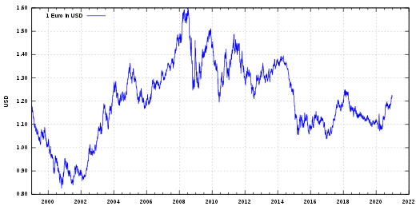
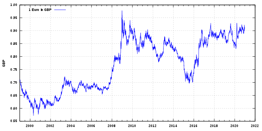

Euro
The euro (symbol: €; code: EUR) is the official currency of 19 of the 27 member states of the European Union. This group of states is known as the eurozone or euro area and includes about 343 million citizens as of 2019. The euro, which is divided into 100 cents, is the second-largest and second-most traded currency in the foreign exchange market after the United States dollar.
The currency is also used officially by the institutions of the European Union, by four European microstates that are not EU members, the British Overseas Territory of Akrotiri and Dhekelia, as well as unilaterally by Montenegro and Kosovo. Outside Europe, a number of special territories of EU members also use the euro as their currency. Additionally, over 200 million people worldwide use currencies pegged to the euro.
The euro is the second-largest reserve currency as well as the second-most traded currency in the world after the United States dollar. As of December 2019, with more than €1.3 trillion in circulation, the euro has one of the highest combined values of banknotes and coins in circulation in the world.
The name euro was officially adopted on 16 December 1995 in Madrid. The euro was introduced to world financial markets as an accounting currency on 1 January 1999, replacing the former European Currency Unit-ECU at a ratio of 1:1 (US$1.1743). Physical euro coins and banknotes entered into circulation on 1 January 2002, making it the day-to-day operating currency of its original members, and by March 2002 it had completely replaced the former currencies.
While the euro dropped subsequently to US$0.83 within two years (26 October 2000), it has traded above the U.S. dollar since the end of 2002, peaking at US$1.60 on 18 July 2008 and since then returning near to its original issue rate. In late 2009, the euro became immersed in the European sovereign-debt crisis, which led to the creation of the European Financial Stability Facility as well as other reforms aimed at stabilising and strengthening the currency.
Euro exchange rates against USD starting from 1990.
Exchange Rates
Flexible exchange rates: The ECB targets interest rates rather than exchange rates and in general, does not intervene on the foreign exchange rate markets. This is because of the implications of the Mundell–Fleming model, which implies a central bank cannot (without capital controls) maintain interest rate and exchange rate targets simultaneously, because increasing the money supply results in a depreciation of the currency. In the years following the Single European Act, the EU has liberalised its capital markets and, as the ECB has inflation targeting as its monetary policy, the exchange-rate regime of the euro is floating.
Euro exchange rates against GBP starting from 1990.
Against other major currencies: After its introduction on 4 January 1999 its exchange rate against the other major currencies fell reaching its lowest exchange rates in 2000 (3 May vs Pound sterling, 25 October vs the U.S. dollar, 26 October vs Japanese yen). Afterwards it regained and its exchange rate reached its historical highest point in 2008 (15 July vs U.S. dollar, 23 July vs Japanese yen, 29 December vs Pound sterling). With the advent of the global financial crisis the euro initially fell, to regain later. Despite pressure due to the European sovereign-debt crisis the euro remained stable.[105] In November 2011 the euro's exchange rate index – measured against currencies of the bloc's major trading partners – was trading almost two percent higher on the year, approximately at the same level as it was before the crisis kicked off in 2007.